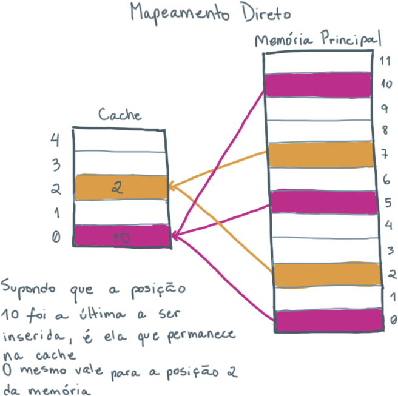
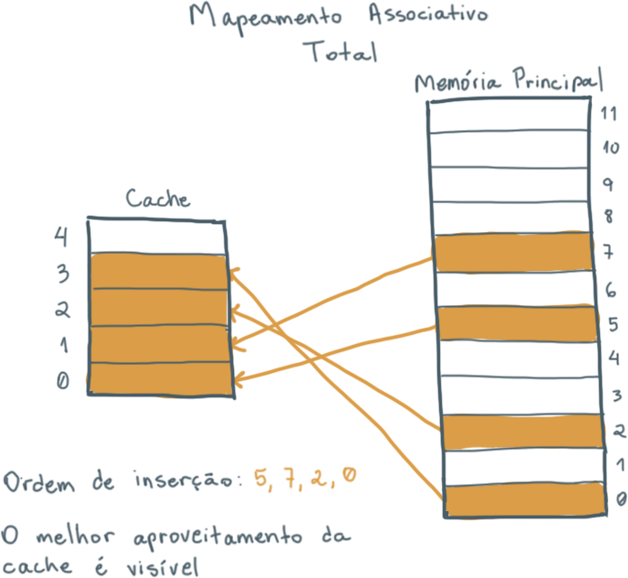
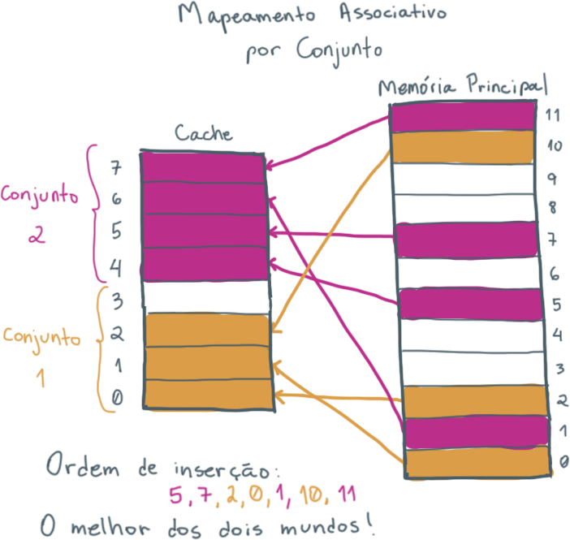

Memória What?
A memória cache é um dos módulos mais importantes que compõem um processador. Atualmente, ela vem embutida em praticamente todos os processadores de última geração, pois seu objetivo é melhorar o desempenho ao minimizar o custo de acesso à memória principal. Contudo, devido à grande quantidade de termos é comum que as pessoas se confundam sobre o que ela é e como ela funciona.
Antes de começarmos, iremos definir alguns conceitos básicos necessários para o entendimento da parte teórica dessa tecnologia.
As instruções da CPU
Seja para buscar dados ou carregar novas instruções. A memória principal tem um papel muito importante para o bom funcionamento do computador, pois é nela que ficam carregados os programas assim que ligamos o sistema operacional.
Porém, é muito caro buscar dados na memória principal e é aí que entra a memória cache, que serve como uma cópia de trechos da memória principal, só que mais próxima do processador e de acesso mais rápido!!
A abstração mais simples da importância da memória cache pode ser vista na animação abaixo:
Veja que na primeira imagem, a busca dos dados da memória principal é feita diretamente e, por isso, ela é mais demorada pois os dados precisam ser buscados um a um.
Já na segunda imagem, há a inserção de uma cache de 1 nível. O caminho percorrido para buscar o bloco de memória solicitado pela CPU é menor e isso já causa uma melhora no tempo de acesso.
A terceira imagem mostra a inserção de um segundo nível que, além de diminuir o caminho em partes menores também permite que blocos maiores sejam buscados nos níveis mais distantes. Na prática, seria possível inserir quantos níveis fosse desejado, mas o mais comum é a divisão da cache em 3 níveis.
Blocos e Palavras
O primeiro conceito importantes para entender o funcionamento de uma cache é saber a diferença entre as definições de bloco e palavra.
- Palavra: é o menor conjunto de dados que o processador pode solicitar para a memória principal. Ele pode representar um valor ou uma instrução, por exemplo.
- Bloco: é um conjunto de palavras.
Princípio de localidade
A memória cache, apesar de eficiente, não possui tanta disponibilidade de espaço quanto uma memória principal. É preciso, portanto, saber selecionar quais são os dados mais importantes para serem mantidos dentro de si.
Pensando nisso foi criado o princípio de localidade temporal e espacial.
- Localidade temporal: se um dado foi utilizado recentemente há mais chances de ele ser usado novamente no futuro.
- Localidade espacial: se um dado foi utilizado há mais chances de os dados vizinhos também serem utilizados pelo processador.
Taxa de acerto e Taxa de erro
Toda vez que o processador precisa de algum dado, ele irá enviar para a conexão o endereço do dado desejado.
Por conta do princípio de localidade, há a probabilidade de os dados requisitados estarem ou não na memória cache. Caso eles estejam, nós chamamos isso de Cache Hit (ACERTO) e os dados são enviados para a memória principal. Caso contrário, há um Cache Miss (FALHA) e os dados são buscados no próximo nível.
A Taxa de Acerto (Hit Rate) se refere à porcentagem de requisições que foram encontradas no nível de cache atual. Quanto maior for o hit rate de uma cache maior é a sua eficiência pois cada miss acrescenta pelo menos mais uma etapa de busca de dados e, portanto, aumenta o tempo total da operação.
Tamanho da cache
Quanto menor, mais rápida, pois uma cache grande implica em um número maior de portas envolvidas no endereçamento, o que deixa a verificação mais lenta.
Por outro lado, uma cache com tamanho maior possui uma taxa de acertos mais alta, pois consegue aproveitar melhor o princípio de localidade espacial.
Tendo as vantagens e desvantagens em mente, é comum que os processadores disponham de memórias caches com tamanhos crescentes conforme se afastam da CPU.

Mas e agora, como a mágica funciona?
Já discutimos os princípios mais básicos para compreender como uma cache funciona, mas agora precisamos sair do nível abstrato... afinal, como a cache sabe se um determinado dado está contido nela ou não? A resposta: FUNÇÕES DE MAPEAMENTO!!! \o/
Existem diferentes tipos de mapeamentos, sendo eles:
- Mapeamento direto: cada bloco da memória principal é mapeado em um único bloco da cache.
- Mapeamento associativo total: um bloco da memória principal pode ser carregado em qualquer posição da cache que esteja disponível.
- Mapeamento associativo por conjunto: a memória cache é dividida em um número de conjuntos e cada conjunto possui uma quantidade fixa de blocos.
Mapeamento direto
A posição de um bloco da memória principal na cache é determinado pela função módulo. Usa-se a seguinte expressão:
i = j mod m
Sendo i a posição na cache, j a posição na memória principal e m o número de blocos que a cache possui.
Este é um modo de mapeamento simples e com baixo custo para a cache pois, como cada bloco possui uma posição fixa, basta verificar um único endereço para saber se ele está ou não contido na cache.
No entanto, quanto menor o tamanho da cache maior será o número de conflitos entre diferentes endereços, diminuindo portanto a taxa de acertos.
Mapeamento associoativo total
Ao contrário do mapeamento direto, os blocos não possuem uma posição fixa. Quando um novo bloco é carregado da memória principal a cache procura o primeiro espaço vazio disponível e o insere nessa posição. Caso a cache esteja lotada, uma politica de substituição é adotada e um dos blocos é substituído pelo novo.
A vantagem deste modo é que ele aproveita ao máximo o espaço disponível na cache. No entanto o processo de verificar se um dado está ou não contido nele é mais caro devido à necessidade de comparar todos os blocos.
Mapeamento associoativo por conjuntos
Esse tipo de mapeamento é mais utilizado para caches maiores. Ele funciona como uma mistura de ambas as técnicas mencionadas anteriormente. A cache é dividida em conjuntos e cada bloco da memória é sempre designado para um único conjunto, como no mapeamento direto. A diferença é que como um conjunto possui mais de um bloco, o dado pode ser inserido em qualquer posição vazia, como ocorre no mapeamento associativo total.
Ele possui as mesmas vantagens e desvantagens dos métodos anteriores.
Chegamos ao fim e...
Aprendemos mais sobre a memória cachê e sobre a importância dela para diminuir o tempo dos acessos à memória do computador. Caso você queira se aprofundar mais no assunto recomendamos os livros dos aclamados David A. Patterson e John LeRoy Hennessy.